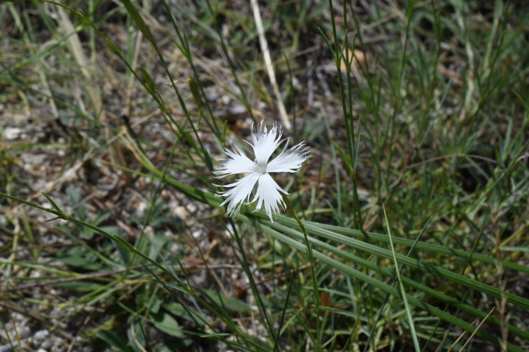
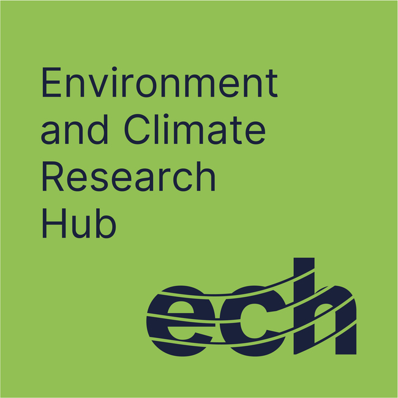
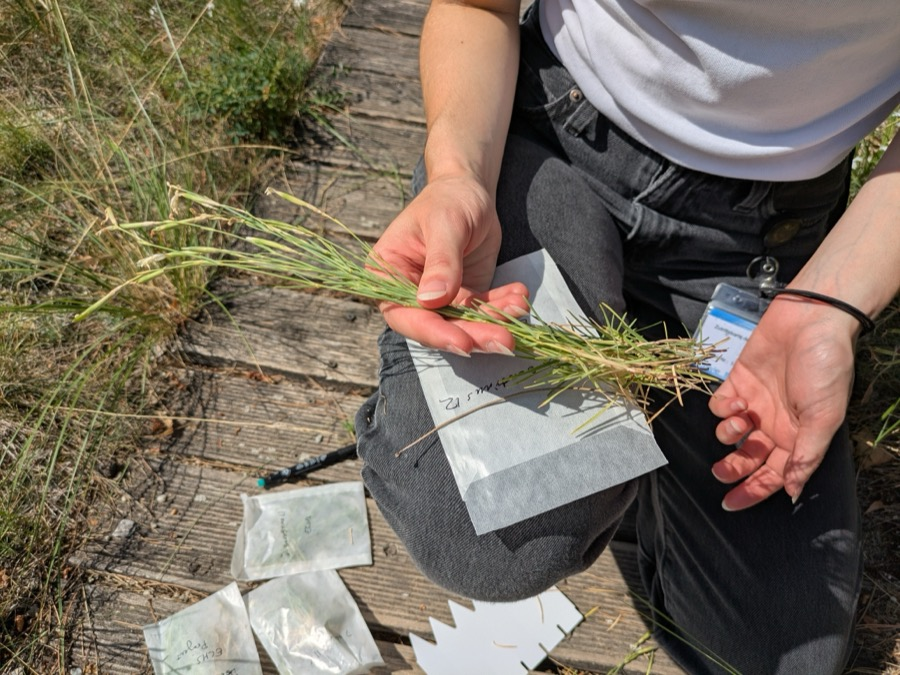
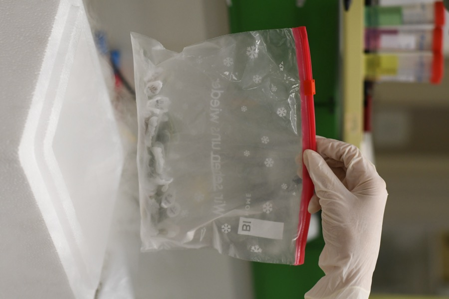
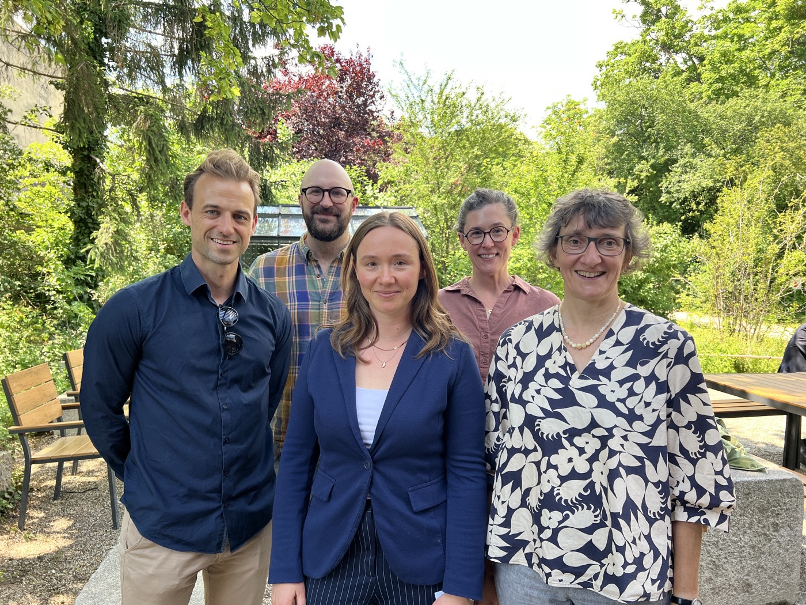

Target species selected
We have selected Dianthus serotinus, an endangered pink native to Austria, as the focal species for our whole-genome assessment.

Supported by ECH with Seed FundingWhole-Genome Assessment of Endangered Species for Conservation Success and Biodiversity Reporting
Genetic diversity is one of the three foundational pillars of biodiversity, alongside species and ecosystems, as it provides the raw material species need to adapt to environmental change. The 196 parties to the Convention on Biological Diversity, Austria included, formally committed to safeguarding it under the 2022 Kunming-Montreal Global Biodiversity Framework. Yet in practice, genetic diversity remains the neglected pillar: data are scarce for most endangered species, and national reporting relies on indirect proxies such as population counts rather than direct DNA-based measures. As a result, a population can appear healthy while quietly accumulating inbreeding and harmful mutations that erode its long-term viability.
This is especially pressing in Austria, where nearly 37% of plant species are threatened with extinction and whole-genome data are missing for the majority of them. Our project closes this gap by combining cutting-edge population genomics with political science expertise on biodiversity policy, we aim is to generate both accurate genomic assessments for an endangered Austrian species serving as a case study and actionable insights that feed directly into national conservation decisions and international reporting.

We have selected Dianthus serotinus, an endangered pink native to Austria, as the focal species for our whole-genome assessment.

Fieldwork is ongoing to sample populations of Dianthus serotinus across its Austrian range, laying the groundwork for genome sequencing.

We are extracting DNA from collected samples in the lab, the first step toward generating whole-genome data.

This project is led by ECH members Daria Shipilina (Department of Botany and Biodiversity Research) and Arne Langlet (Department of Political Science), together with Norman Wickett, a researcher in Botany and Biodiversity. By combining population genomics with political science expertise on biodiversity policy, the team aims to understand the genomes of endangered species and translate these findings into policy-relevant outputs that strengthen Austria's CBD/KMGBF reporting and conservation practice.
The project is carried out in partnership with Krissa Skogen and Barbara Knickmann at the Botanical Garden of the University of Vienna.
Questions about the project? Get in touch with the project leads: